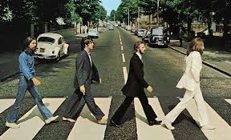

Musicos
1. The Beatles

Biografía: Banda británica formada en Liverpool en 1960. Compuesta por John Lennon,
Paul McCartney, George Harrison y Ringo Starr. Revolucionaron la música popular y son considerados
una de las bandas más influyentes de todos los tiempos.
Álbum más representativo: Sgt. Pepper's Lonely Hearts Club Band (1967)
2. Nirvana
Biografía: Banda estadounidense formada en 1987 en Seattle, liderada por Kurt
Cobain. Fue clave en la popularización del grunge y marcó a una generación con su sonido crudo y
emocional.
Álbum más representativo: Nevermind (1991)
3. Coldplay
Biografía: Banda británica formada en 1996, reconocida por su estilo melódico y
emocional. Liderada por Chris Martin, ha mezclado rock alternativo con pop y electrónica a lo largo
de los años.
Álbum más representativo: A Rush of Blood to the Head (2002)
4. Morat

Biografía: Banda colombiana de pop/folk formada en Bogotá. Conocida por sus letras
emotivas y estilo acústico, han logrado gran éxito en el mundo hispano con colaboraciones y
canciones románticas.
Álbum más representativo: Balas Perdidas (2018)
5. Los de Adentro
Biografía: Banda colombiana de pop-rock alternativo formada en 1996. Se hizo
conocida por su mezcla de sonidos tropicales con rock suave y letras sentimentales.
Álbum más representativo: Los de Adentro (2001)